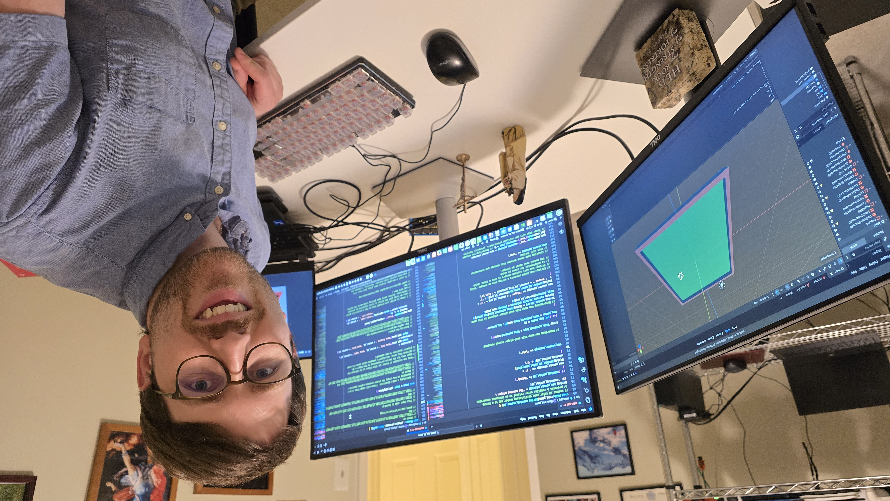

Welcome to my home page! I am a Catholic, husband, dad, and Research Fellow at the Institute for Family Studies. I live in Charlottesville, Virginia with my wife and children.
I grew up in McLean, Virginia, then attended Middlebury College for my BA in Psychology (which I received in 2013). I entered the Carmelite pre-novitiate in 2014 but I soon recognized that I felt called to marriage; therefore, I discerned out of the formation program later that year.
After a year as an AmeriCorps VISTA member, I attended the University of Texas at Austin for a Master of Science in Social Work. Following my graduation in 2018, I worked as a mental health counselor with Catholic Charities of the Diocese of Evansville.
I greatly enjoyed my counseling work, but I was also interested in working in the back-office side of nonprofits. Therefore, I moved to New York and pursued an MBA at Columbia Business School. While at CBS, I developed a passion for data analysis and programming; after graduating in 2022, I had the opportunity to apply that passion by working as a data analyst for Seton Education Partners, a Catholic nonprofit that manages Catholic and charter schools in various parts of the country.
My wife and I got married in 2023, and we welcomed our first child the following year--after which we both desired to move closer to our families. Therefore, we returned to Virginia in 2024, where I began my work with the Institute for Family Studies.
I greatly enjoy working on computer programming projects in my free time. I have released most of these under the MIT license, thus allowing them to be modified and repurposed for free by other users (even for commercial use).
Here is an incomplete list of some of my favorite projects. (Additional projects can be found within my list of GitHub repositories.)
PFN is a guide to using Python to analyze, visualize, and share nonprofit data.
This free and open-source C++ program allows users to build their keyboarding skills by typing Bible verses. (I had previously created a similar game within Python; it can be found at this GitHub repository.
This project offers a step-by-step guide to creating a 3D multiplayer game in Godot using C++ and GDExtension.
This project demonstrates how to use the Plotly.js library to create an interactive dashboard of county-level growth trends. It also shows how to use JavaScript to filter a dataset and calculate percentile ranks.